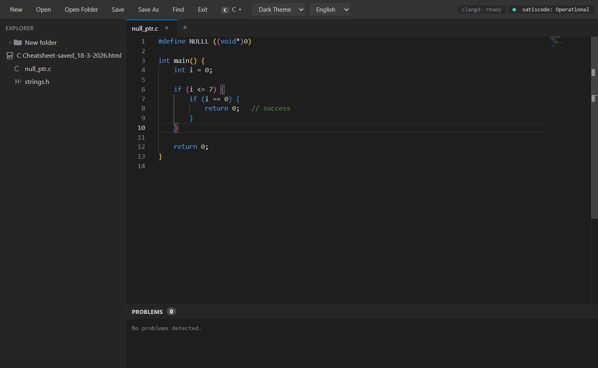

SATISCODE
Satiscode is designed to be a simple Integrated Development Environment (IDE). The simplicity comes from not tracking its users and being 100% anti-AI. This means that we support AI development in the repo, but not in the IDE itself. Without built-in AI, the IDE remains as lightweight as the Node.js modules included.
Get the latest version for Windows directly from GitHub Releases:
Latest Windows VersionFeatures
- Light weight: The IDE installed is only 600 MBS in size once installed
- ANTI AI: The IDE has NO AI FEATURES
- C support: This IDE nativly supports C and C++ syntax highlighting.
- Python and WebDev Language support.
Preview

Release Info
Version:
Release date:
Installer size:
Contributors
Thank you to all those who have helped to make satiscode what it is today, your help is greatly appreciated.